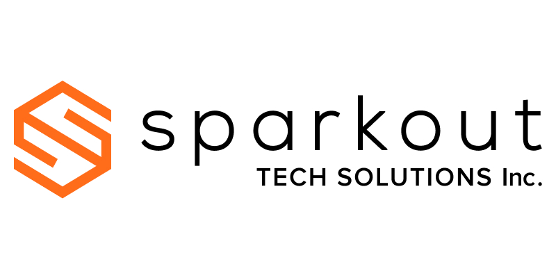
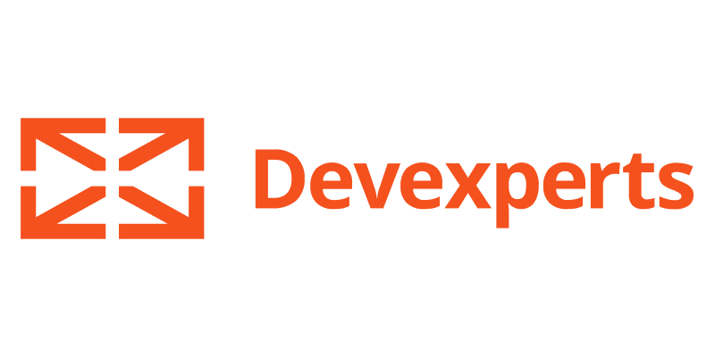
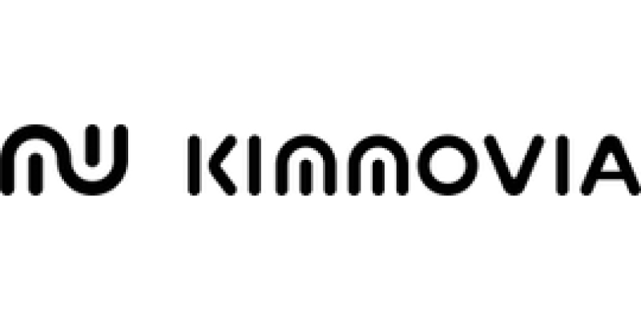
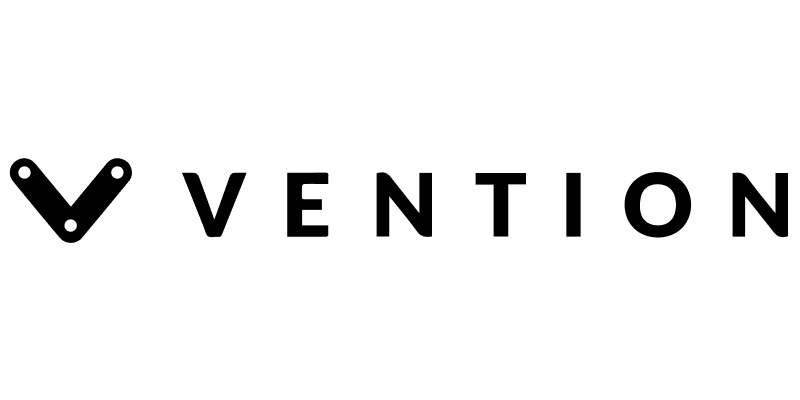
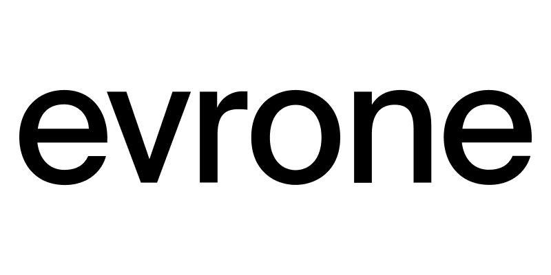
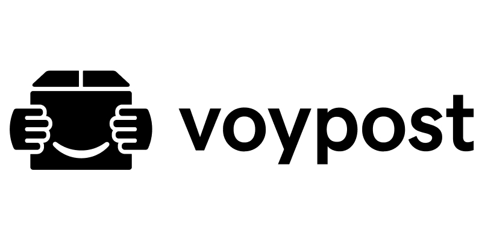
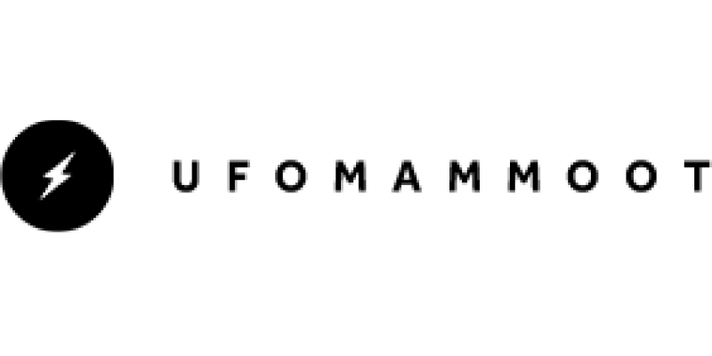
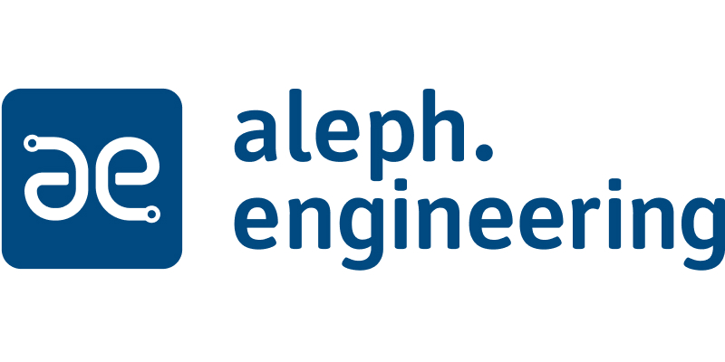
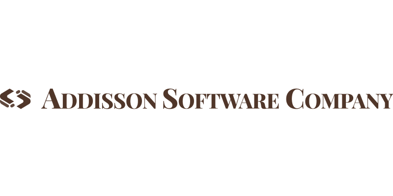

Now, you’re an entrepreneur or a business owner looking to build a software for your business or maybe a custom app to launch publicly. You have also figured out that building your own team is tedious and expensive and that what you need is an agency. Well worry not because I’ve put together a comprehensive top 10 list of the best custom software development agencies in Germany for your next project.
Discover The Top 10 custom software development agencies in Germany For Custom Software
When it comes to hiring custom software development agencies in Germany for your business or startup there are many providers to choose from. Now among these companies a lot of them provide the same services. However, some agencies may be experts in a particular industry and others may be experts in the other. When choosing your technology partner you have to be aware of their capabilities and how they align with your business needs.
There are a few things to consider when you’re choosing your service provider. Like are they capable of handling a project such as the one you have? Do they have a reputation as one of the leading custom software development agencies in Germany? What kind of technologies do they work with and what does their track record look like? If you can answer these questions you would end up with the right provider that can help you turn your ideas into functional software solutions.
Luckily, we have for you a pretty detailed yet summarized list to get you on your way.
Let’s jump right into our top 10 list of the best custom software development agencies in Germany. These are all amazing agencies and you can’t go wrong picking one over the other. However, choosing the agency that aligns with your specific needs will save you a lot of time and money in the long run.
1. Sparkout Tech Solutions Inc.

Sparkout Tech Solutions Inc is a leading and widely known software development provider that works with clients from all over the globe which includes Germany. It has a strong presence in Europe, the US and South-East Asia and can help you build robust software solutions in a variety of industries.
Sparkout Tech is well known for working with businesses in the fintech, healthcare, supply chain, logistics and travel industries. Additionally, as one of the top custom software development agencies in Germany Sparkout Tech also works with advanced technologies like blockchain, IoT, artificial intelligence and machine learning.
One thing to note about Sparkout Tech is that it works closely with its clients from start of the project to finish and builds highly customized software solutions tailored to the clients’ businesses. The process starts from the project ideation and design to end to end product development and post launch maintenance. Sparkout Tech is a full service agency and provides services like custom software development, mobile app development, web app development, blockchain development, AI and ML development and DevOps services. As one of the leading custom software development agencies in Germany Sparkout Tech also provides you with multiple engagement models and is keen on using agile methodologies to make the development process seamless and quick.
Pros:
- A very deep focus on advanced and emerging technologies for building solutions like blockchain, IoT, AI/ML and deep learning.
- A full cycle agency where you can get end to end technology solutions under one roof.
- Offers flexible and time efficient engagement models like the agile methodology to make the development process smooth and quick.
- Wide experience in industries like fintech, healthcare, supply chain, logistics and travel.
Cons:
- Since the services are wide and comprehensive as one of the custom software development agencies in Germany the cost for development may be on the higher side depending on how complex your project is.
- Highly complex solutions like blockchain and AI may take longer to develop based on the project.
Website - www.sparkouttech.com
2. Devexperts

Devexperts is a well known company that specializes in custom software development and they are experts in the finance industry. If you look at their track record they have more than 2 decades in the business and have developed robust platforms for multiple businesses like brokerages, exchanges, wealth management firms and hedge funds.
They are a great software provider for you if you’re looking for solutions like trading software, data analytics tools and machine learning solutions. Additionally, as one of the trusted custom software development agencies in Germany they have a very keen focus on building software that is high performing and reliable.
Pros:
- They specialize in the finance industry and are great if you need niche solutions and expertise.
- They are very experienced in building software for highly regulated environments.
- They build high performing software for use cases like trading and data analytics.
Cons:
- Their services are majorly centered around finance so their focus on other broader areas may be minimal.
- Since they are experts in a niche their pricing may be on the higher side if you’re a smaller business.
Website - www.devexperts.com
3. KINNOVIA

KINNOVIA is one of the leading custom software development agencies in Germany and is well known for building tailor made digital solutions for businesses. If you’re looking for a company that has expertise in both business thinking and innovative technologies then KINNOVIA just might be the pick for you.
They can help you build solutions that follow the highest design and usability standard while aligning with your company’s core business objectives. Their services spread wide and start from cloud based software engineering to full scale mobile apps. Additionally, they have a key focus on providing you with digital transformation strategies. As they are one of the major custom software development agencies in Germany they provide development using agile methodology so that you can make changes to your app ideas on the go and deliver results faster.
Pros:
- They have a very strong focus on aligning the solutions they build for you with your business goals.
- They provide you with agile methodologies so that your project development process can be flexible.
- They have expertise to provide you with digital transformation services.
Cons:
- Since they have a comprehensive and custom service their costs may be on the higher side.
- They have limited global presence as they are one of the major custom software development agencies in Germany which might be limiting if you’re located outside of Germany.
- If you have a large scale project then make sure that their team size aligns with your requirements.
Website - www.kinnovia.com
4. Vention

Vention is a little different because their focus is on helping tech companies scale their development teams as well as provide custom software development services. Because of this they offer full scale services for businesses so if you need a wide range of services like software design, programming DevOps and testing Vention may be your right fit.
Their services are also flexible because whether you want to build a solution from scratch or just increase your current team’s capacity Vention provides you all of that. Additionally, they also work with a wide range of industries as one of the leading custom software development agencies in Germany like fintech, healthcare and retail.
Pros:
- As they provide flexible staffing models for you it's easy for you to scale your development process.
- They have a wide range of expertise especially in industries like fintech, healthcare and retail.
- They offer a full scale of services which starts from the design stage to quality assurance and testing.
Cons:
- They provide a specialized service and may suit companies that are heavy on tech.
- If you’re looking for just staff augmentation for the long term their costs may be on the higher side depending on your requirements.
- As one of the leading custom software development agencies in Germany they have a strong presence in Germany but if you’re outside of Germany it may be limiting.
Website - www.vention.io
5. Evrone

If you’re looking for an agency that works on cutting edge solutions for your project then Evrone is a good one to look at. Their services are also wide which includes custom web apps, mobile apps and blockchain technology.
They pay very keen attention to the design aspects of your software and are well known for providing apps that are both aesthetically pleasing and highly functional. Their solutions are also designed to meet the expectations of a modern user. One great thing about them as one of the custom software development agencies in Germany is their keen focus on collaboration and they work with a wide range of industries from fintech to healthcare.
Pros:
- Deep expertise in technologies like AI and Blockchain.
- They have a very big focus on being design driven for software development.
- They have a very good focus on being collaborative with their clients.
Cons:
- Since they work with advanced technologies and provide a very collaborative service their costs may be on the higher side.
- Due to their detailed services your project timelines could be on the longer side if you have a very complex software idea.
- As one of the top custom software development agencies in Germany they provide a specialized service and if you’re in the enterprise space you have to figure out if their services align with your requirements.
Website - www.evrone.com
6. Voypost

Voypost is a well known agency for software development and their services span end to end for their clients. One thing that’s unique about them is that they have deep expertise in web and mobile app development and can rapidly build solutions for you by using agile methodologies.
This not only makes the development process flexible and seamless but also ensures that you get good quality products. As one of the trusted custom software development agencies in Germany they work with a wide range of industries like e-commerce, logistics and fintech. They are also known for building high quality digital products within budget if you’re a small business or a new startup.
Pros:
- You can get faster delivery of your digital products while preserving quality through the agile development model.
- They provide high quality services at competitive pricing if you’re just starting out.
- Their industry experience spans broad and they work in industries like e-commerce and logistics.
Cons:
- Since they operate majorly with smaller businesses their services may not cover enterprise requirements.
- As one of the top custom software development agencies in Germany they have limited focus on emerging technologies like AI and blockchain.
- Since they work using the agile model there could be scope changes in between the development process.
Website - www.voypost.com
7. Sparky bit
Sparkybit is an agency that does custom software development for industries like fintech, IT and automotive. Their services also include things like system integration, software engineering and IT consulting.
They have a keen focus on building highly robust solutions that address the clients’ specific needs which means that you get a tailored digital product for your business. Sparkybit has an experienced team that works with agile methodologies and specializes in rapid development while ensuring that the solution aligns with the clients’ existing infrastructure. They are one of the trusted custom software development agencies in Germany and provide their clients with consulting services so that you can optimize your digital transformation journey.
Pros:
- Their specialization is deep in the fintech and IT sectors.
- They also have a strong focus on system integration and build solutions that are scalable.
- If you’re looking to transform your business digitally their consulting service may be of use to you.
Cons:
- Since they focus on certain industries their bandwidth outside of these sectors may be limited.
- Since they use agile models for the development process you as a client may need to directly collaborate with them more.
- Although they are one of the leading custom software development agencies in Germany their focus on consumer facing technologies may be less.
Website - www.sparkybit.com
8. ufomammoot

UfoMammoot is a custom software development agency that’s based out of Germany and their major focus is to work with startups and established businesses to build robust solutions. Their services offerings are fairly wide and they work on mobile and web app development as well as digital strategy consultation.
Additionally, they are also well known for working very closely with their clients to build tailored solutions that meet their clients’ specific needs. Their solutions are known for being highly user friendly and visually appealing while at the same time being functional. They are one of the top custom software development agencies in Germany and provide you with an iterative development process with solutions that are of high quality.
Pros:
- They are known for giving you highly personalized solutions that are tailored to your specific needs.
- They have a keen focus on creating user friendly design that also boasts functionality.
- Apart from software engineering services they also give you access to digital strategy consultation.
Cons:
- Since they work a lot with startups you have to see if their services align with your requirements if you’re a large enterprise.
- Since they provide a comprehensive service as one of the leading custom software development agencies in Germany their costs may be on the higher side if you're a smaller startup.
- Their focus on emerging technologies like AI and blockchain is limited which might be a barrier if your project is on these spaces.
Website - www.ufomammoot.de
9. Aleph Engineering

Aleph Engineering is an agency that provides you with custom software development and consulting services. One of their major focal points is in building robust solutions for their clients that are also scalable.
They are an agency that’s very experienced in a broad range of industries like healthcare, finance and logistics. Another major point about Aleph is that they build solutions that can integrate easily with their clients’ existing software systems. Additionally, as one of the trusted custom software development agencies in Germany they are well known for creating solutions that have high performing backend and complex integrations. This means that as a business you get software that can scale as your business grows even with heavy traffic.
Pros:
- Their focus is strong on creating amazing backend systems and complex integrations.
- They work with growing businesses looking for highly scalable solutions.
- Extensive experience in building high performing software systems in industries like healthcare, finance and logistics.
Cons:
- Since their major focus is on building backend systems you will have to see if their frontend capabilities match your project’s needs.
- As one of the leading custom software development agencies in Germany they work majorly in niches which might not suit small businesses or startups.
- Your development timelines may be longer if you’re trying to build a very complex software.
Website - www.aleph.engineering
10. Addisson

Addisson is a well known agency that’s recognized for their web and mobile app solutions that are designed to improve your digital presence. When it comes to their services they are broad which spans from UI/UX design to backend development.
They are also known for creating solutions that are striking visually and also provide functionality suited for modern business needs. Additionally, they also provide digital marketing and SEO services as one of the top custom software development agencies in Germany. If you’re looking to build creative and innovative products that can stand out in competitive markets then Addisson might just be the right technology partner for you.
Pros:
- Their offerings include a broad range of services from user experience design, planning and development to digital marketing and SEO.
- They pay very close attention to UI/UX design and provide you with software that’s both aesthetically appealing and functionally sound.
- They have a keen focus on creativity and innovation when building software solutions.
Cons:
- Because their solutions are highly creative they might not suit all industries.
- Since their services are very wide as one of the top custom software development agencies in Germany their associated cost for development may be on the higher side.
- If you have a very high scale product then you will have to see if their services align with your requirements.
Website - www.addisson.de
Wrapping up our list of 10 best custom software development agencies in Germany
When you’re building a custom software solution for the first time you may not have everything figured out. Every idea needs an expert touch to evolve into its true potential. Our list of the best custom software development agencies in Germany should help you understand the ins and outs of each agency so that you can choose a provider that best suits your needs.
Every agency in our list has great solutions for the industries and technologies they work with. You don’t have to worry about going wrong if you choose any one of them. However, some agencies are great at some things and others are better at other things. As a product founder it is up to you to understand which agency suits your project the most and aligns with your ideas the best.
Don’t forget to share this blog post with a founder who may find the information helpful.